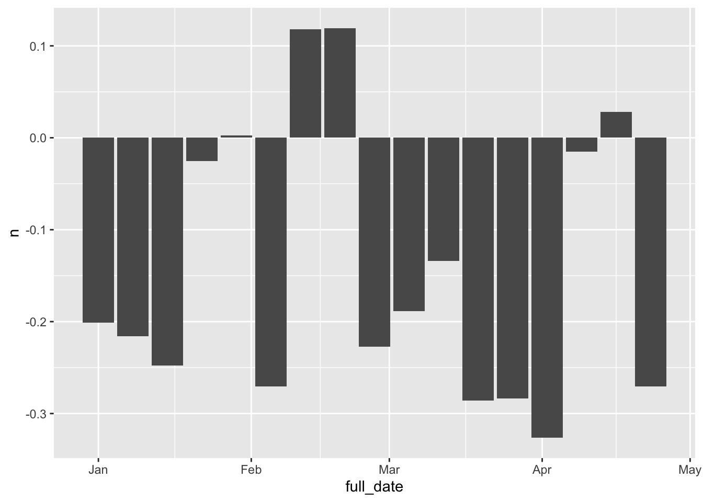

11 Sentiment analysis
A surprisingly easy text mining task, once your documents have been turned into a tokenised dataframe, is sentiment analysis. Sentiment analysis is the name for a range of techniques which attempt to measure emotion in a text.
There are lots of ways of doing this, which become more and more sophisticated. One fairly simple but robust method is to take a dataset of words with corresponding sentiment scores (this could be a simple negative or positive score, or a score for each of a range of emotions). Then you join these scores to your tokenised dataframe, and count them.
The tricky bit is working out what it all means: You could argue that it’s reductive to reduce a text to the sum of its positive and negative scores for each word - this is obviously not the way that language works. Also, if you’re summing the scores, you need to think about the unit you’re summarising by. Can you measure the emotions of a newspaper? or does it have to be per article? And of course it goes without saying that this was created by modern readers for use on modern text.
Despite these questions, it can throw up some interesting patterns. Perhaps, if used correctly, one might be able to understand something of the way an event was reported, though it may not actually help with the ‘sentiment’ of the article, but rather reporting style or focus. I think with the right use, sentiment shows some promise when specifically applied to newspaper data, but thinking of it as sentiment may be a fool’s errand: it tells us something about the focus or style of an article, and over time and in bulk, something of a newspaper’s style or change in style.
The tidytext library has a few built-in sentiment score datasets (or lexicons). To load them first install the textdata and tidytext packages, if they’re not installed already (using install.packages())
11.1 Install and load relevant packages
11.2 Fetch sentiment data
Next use a function in the tidytext library called get_sentiments(). All this does is retrieve a dataset of sentiment scores and store them as a dataframe.
There are four to choose from - I’ll quickly explain each one.
11.2.1 Afinn dataset
## # A tibble: 10 x 2
## word value
## <chr> <dbl>
## 1 abandon -2
## 2 abandoned -2
## 3 abandons -2
## 4 abducted -2
## 5 abduction -2
## 6 abductions -2
## 7 abhor -3
## 8 abhorred -3
## 9 abhorrent -3
## 10 abhors -3The Afinn dataset has two colums: words in one column, and a value between -5 and +5 in the other. The value is a numeric score of the word’s perceived positivity or negativity. More information is available on the official project GitHub page
11.2.2 Bing dataset
The second, the Bing dataset, was compiled by the researchers Minqing Hu and Bing Liu. It is also a list of words, with each classified as either positive or negative.
## # A tibble: 10 x 2
## word sentiment
## <chr> <chr>
## 1 2-faces negative
## 2 abnormal negative
## 3 abolish negative
## 4 abominable negative
## 5 abominably negative
## 6 abominate negative
## 7 abomination negative
## 8 abort negative
## 9 aborted negative
## 10 aborts negative11.2.3 Loughran dataset
I’ve never used it, but it’s clearly similar to the Bing dataset, with a column of words and a classification of either negative or positive. More information and the original files can be found on the creator’s website
## # A tibble: 10 x 2
## word sentiment
## <chr> <chr>
## 1 abandon negative
## 2 abandoned negative
## 3 abandoning negative
## 4 abandonment negative
## 5 abandonments negative
## 6 abandons negative
## 7 abdicated negative
## 8 abdicates negative
## 9 abdicating negative
## 10 abdication negative11.2.4 NRC dataset
## # A tibble: 10 x 2
## word sentiment
## <chr> <chr>
## 1 abacus trust
## 2 abandon fear
## 3 abandon negative
## 4 abandon sadness
## 5 abandoned anger
## 6 abandoned fear
## 7 abandoned negative
## 8 abandoned sadness
## 9 abandonment anger
## 10 abandonment fearThe NRC Emotion Lexicon is a list of English words and their associations with eight basic emotions (anger, fear, anticipation, trust, surprise, sadness, joy, and disgust) and two sentiments (negative and positive). The annotations were manually done by crowdsourcing.
(https://saifmohammad.com/WebPages/NRC-Emotion-Lexicon.htm)
The NRC dataset is a bit different to the other ones. This time, there’s a list of words, and an emotion associated with that word. A word can have multiple entries, with different emotions attached to them.
11.3 Load the tokenised news sample
This has two colums, ‘word’ and ‘value’. inner_join() will allow you to merge this with the tokenised dataframe.
## Joining, by = "word"## # A tibble: 15,712 x 8
## article_code art title year date full_date word value
## <int> <chr> <chr> <chr> <chr> <date> <chr> <dbl>
## 1 1 0001 0002644 1809 0101 1809-01-01 grateful 3
## 2 1 0001 0002644 1809 0101 1809-01-01 encouragement 2
## 3 1 0001 0002644 1809 0101 1809-01-01 encouragement 2
## 4 1 0001 0002644 1809 0101 1809-01-01 promised 1
## 5 1 0001 0002644 1809 0101 1809-01-01 increase 1
## 6 1 0001 0002644 1809 0101 1809-01-01 negative -2
## 7 1 0001 0002644 1809 0101 1809-01-01 worth 2
## 8 1 0001 0002644 1809 0101 1809-01-01 gift 2
## 9 1 0001 0002644 1809 0101 1809-01-01 inconvenience -2
## 10 1 0001 0002644 1809 0101 1809-01-01 determined 2
## # … with 15,702 more rowsNow we have a list of all the words, one per line, which occurred in the afinn list, and their individual score. To make this in any way useful, we need to summarise the scores. The article seems by far the most logical start. We can get the average score for each article, which will tell us whether the article contained more positive or negative words. For this we use tally() and mean()
I’m also using add_tally() to filter out only articles which contain at least 20 of these words from the lexicon, because I think it will make the score more meaningful.
Let’s look at the most ‘positive’ article
tokenised_news_sample %>%
inner_join(afinnsentiments) %>%
group_by(article_code) %>%
add_tally() %>%
filter(n>20) %>%
tally(mean(value)) %>%
arrange(desc(n))## Joining, by = "word"## # A tibble: 256 x 2
## article_code n
## <int> <dbl>
## 1 262 1.39
## 2 111 1.17
## 3 16 1.11
## 4 86 1.11
## 5 85 1.06
## 6 531 1.04
## 7 52 0.971
## 8 225 0.92
## 9 563 0.877
## 10 301 0.868
## # … with 246 more rowsLet’s take a look at the most ‘positive’ article.
## [1] "THE NATIONAL REGISTER. the River St. Lawrence being frozen, could not probably be before June next. Much had been said on the advantages which this country would derive front the Embargo being raised with respect to England, and continued with res i t ...et to France. But this was a chimerical measure. The moment the French decrees were repealed, ours would he so too. But his Majesty had pledged himself not to seem to purchase the removal of the Embargo, by an act of yielding weakness beneath the dignity of this country. Lord GREN V ILLE having made an able reply, the House divided, when the members stood thus :—Ayes, 70—Noes, 115—Majority against the Motion, .15.—Adjourned. 1101 - STYLE=superscript SE OF COMMONS. Monda c y, Fe). 1 3. The Ilfonqe resolved into a Committee of Supply, in which the Bill for raking 1,500,000/. by Exchequer Bilk, and for paying ox 1,500.00 tn. oft he outstanding Exchequer Bills of last yii.ar, was read fur the first time. Tim Di; N.E OF YORK. Mr. MALTBY examined by the CHANCELLOR of the Ex- C E r R.. —Q. Are you acquainted with Mrs. Clarke? A. Yes; since July, 1806.—Q. flow did you become so acquainted with • her A. By means of Mr. Russel Manners, who was a Member of last Parliament, and who married my wife's sister. He in introduced troduced introduced me to Mrs. Clarice, whom he stated to have great in influence fluence influence with the Duke of York. I therefore went with him to call upon her. This might be three or four years since, about July or August 1506. Mr. Manners, by his relation Gen. Manners, Last a reg . imental account to settle, which could only be done through the Duke of York. He wished therefore to be well widl Mfrs. Clarke.—Q. What had you to do in this transaction? A. I had accommodated Mr. Manners with various sums of money, to the amouat of about one thousand pounds, in conse consequence quence consequence of which he a , STYLE=superscript signed over to me this regimental account, in which he was the creditor against government. I wished to get it settled if I could, and therefore kept well with Mrs. Clarke. —Q. What do you know of a Mr. Lodovick, or do you Ino w any thin; of this person? A. I understood that Mr. Lodo Lodovick vick Lodovick wanted a place, a Commissary's place, or something of that kind.—Q. Who seat Lodovick to you ?A. Mrs. Clarke.— She sent him to you to procure him a place? A. Yes, to ptit him in the way of And was any money deposited in consequence? A. Yes, 750/. —Q. Who were the agents to wham you were to have given this money, in the event ? A. Mr. Tindal was to have had the 1501. the other 6001. I don't know who was to have had, except Mr. Lloyd.— Q. And what were you to get if the appointment took place? A. No Nothing thing Nothing at You had no other purpose than merely to oblige. Mrs. Clarke? A. No, I had no other purpose.—Q. Had you ever represented yourself to Z? rs . Clarke as having any connec connections, tions, connections, as knowing any person, through whom you might procure any appointment? A. Never, I am sure of . STYLE=superscript Did Mr!. Clarke ever apply to you on any other cases of this kind? A. Yes, for a gentleman of the name of Thomson, a relation of per's. Q. When were all these applications made? A. Since Septem September ber September last.---Q. Did you not know that she had separated from the Duke at that time ? A. No; she never told me that she had. —Q. Do you not know that Mrs. Clarke used to represent you as the Duke of Portland, used to say that you were her Duke of Portland ? A. I never knew it till I heard so the other day. Lard ro Lts sTo N e.—Q. When you found that Mrs. Clarke had so little interest to obtain the situations, for which she received your assistance, how came you to imagine that she had sufficient interest with the Duke of York to obtain your object I believed she had still considerable influence over the Duke, and was under his protection.—Q. How many interviews had you, on various occasions, with Mr. Tin Tindal dal Tindal ? A. I cannot tell, but a great many.—Q. In any one of those interviews did you a,ic Mr. Tindal through what channel he teas to obtain those appointments ?—A. On one occasion, that of Mr. Lodovick's, I asked Mr. Tindal through what me medium dium medium he was likely to obtain the appointments ; and he an anowered owered anowered me thrcugh the Wellesiev interest, but he did not men mention tion mention any particular person.—Q. What first led you to \\lr. Tin Tindal dal Tindal ? A. I had been acquainted with him as a kind of agent, and understood he could obtain appointments under government. I was about to state, that I had understood Mr. Manners had received a letter from the Duke of York., in which he was pro nited a place suitable to his name and family. Q. Did that bare had lepoken to the Her. Clarke, in your hearing, ray !B. 19, Duke of York on the affairs of Mr. Manners ? A. Did she ever mention Mr. Manners's business to ion ? A. I do not re recollect.—Q. collect.—Q. recollect.—Q. Did you transact the business fur Mrs. Clarke gratuitously, or did you expect to derive any emolument ? A. I hoped to get my account settled.—Q. How long is it since you have given up the hopes of the settlement ? A. About a mouth. Mrs. Clarke was then called in, who produced a packet of letters, which she said she had received from Mr. Maltby, which she presumed to he his hand-writing, from his name being signed to them all. She also produced two letters from Mr. Barber, whose hand-writing she. also professed a•knowledge of. She was then asked if she had any other letters or papers replied she had; three from Col. M`Mahott. Lord FOLKSTON E asked her if she had any other papers to produce ? A. Yes; she then presented a letter from the Arch Archbishop bishop Archbishop Tuam, in recommendation of Dr. O'Mara. This letter, she stated, was not directed to her, but to the Doctor him. self. She had also a letter from the Duke of York, on the subject of General Claveriag ; and the Duke of York's answer to her respecting Dr. O'Mara; and a letter from Cu!. Shaw, dated from the Downs, previous to his - STYLE=superscript sailing fur the Cape of Good Hope, and soliciting to be placed on the half-pay list. Q. Have you seen the Duke of York write, and is the letter now •hewn to you his writiig;—A. Yes, I have seen his Royal Highness write. This letter to George Farquhar is his hand handwriting. writing. handwriting. Every letter his Royal Highness addressed to me, the superscription was in a fictitious hand, and directed to Mrs. Clarke, at the Post-Office, Worthing, to be left till called for. The inside of those letters were in his Highness's usual hand.— Q. How did you come to the knowledge of the Archbishop of Tuain's hand-writing T. A. I found the letter by accident among, the documents of Dr. O'Mara. Here Mrs. Clarke was ordered to withdraw, when several letters of Mr. Maltby were real by the Clerk. They related to appointments which Mrs. Clarke undertook to obtain for dttkrent officers, urging her to persevere in their behalf K itb the Duke of York. The remainder of Mr. Malthy's letters had reference to Mr. Barber and Mr. Lloyd, in tire procuration of a situation in the Commissariat Department, for Mr. Lodovick. Two or three letters from Col. M`Mahon to Mrs. Clarke were then read. The laat of Colonel 11‘11ahon's letters declared, his total in inability ability inability to serve Mrs. Clarke ; but, at the same time, he ex expressed pressed expressed the high sense he entertained of her manners and conduct, which demanded nothing but his respect, and an assurance of the good wishes be entertained for her. AUTHENTIC LETTERS, FROM THAI DUE OF ronx TO MRS. CLIRNR. August 4, 1805. How can I sufficiently express to my sweetest, my darling Love, the delight which her dear, her pretty letter gave me, or how much I feel all the kind things she says to me in it ! millions and millions of thanks for it, my Angel ! and be assured that my heart is fully sensible of your affection, and that upon it alone its whole happiness depends. I am, however, quite hurt that my Love did not go to the Lewes Races; how kind of her to think of me upon the occasion ; but I trust that she knows me too well not to be convinced that I cannot bear the idea of adding to those sacrifices which I um but too sensible that she has made to me. News, my Angel cannot expect from me from hence ; though the life led here, at least in the family I am in, is very hurrying, there is a sameness in it which affords little subject for a letter; except Lord Chesterfield's family, there is not a single person except ourselves that I know. Last night, we were at the play which went off better than the first night. Dr. O'Meara called upon me yesterday morning, and delivered me your letter ; he wishes much to preach before Royalty, and if I can put him in the way of it I will. What a time it appears to sae al already, ready, already, my darling, since we parted ; How impatiently 1 look forward to next Wednesday se nnight ! God bless you, my own dear, dear Love ! I shall miss the post if I add more; Oh believe me ever, to my last hour, your's and your's Addressed : Mrs. Clarke, to be left at the Post-Oeice, Worthing. 66 STYLE=superscript Sandgate, 24, 1804. How can I sufficiently express to my darling love my thanks for her dear, dear letter, or the . STYLE=superscript delight which the assurances of her love give me ? Oh, my Angel ! do me justice and be con convinced vinced convinced that there never was a woman adored as you are. Every day, every hour convinces me more and more that my whol happiness depends upon you alone. What a time it appears t o STYLE=superscript bu since we pitrted, and with what Impatience do I look ft,r"## [1] "sent separate article, and have sealed, it with the seals of our arms. Donent London this 14th day of January, 1809. (L.S.) GEORGE CANNING.: Art. 11. Separate. A treaty shall forthwith be negociatNl, stipulating the amount and deseriptioir of succours to be afforded by his Britannic Majesty, agreeably to the third article of the present treaty. In witness w hereof, we, the under - STYLE=superscript signed Plenipotentiaries, have signed, in virtue of our respectite full powers, the present teparatearticle, mid have sealed it with the seals of our arms. Done at London this 11th day of January, 1809. (t.. S.) GEORGI; CANNING. Additional Art.--I . STYLE=superscript llc present circumstances not admitting of the regular negotiation ef a treaty of commerce between the two countries, with all the care and consideration tine to so im important portant important a subjt-et, the. high contracting parties mutually engage to proceed to such negotiation as soon as it shall be practicable so to do, affording, in t he mean time, mutual fat ilitics to the commerce of the subjects of each other, by temporary regula regulations tions regulations founded on principles of reciprocal utility. In witne. , STYLE=superscript s whereof, we, the undersigned Plenipotentiaries,. having sig ned, in virtue, of our respective full powers, the. present ad ditional article, and have sealed it with the seals of our arms. Dune at London this 21st day of March, ISM. (L. S.) GEORGE CANNING. TUESDAY'S LOXDOY GAZETTE., Downing-street, .March '27, 1809. Dispatches, of which the following are copies, have this day Invo received from Lieut -Gen- Beckwith, Commander of his Majestyerforces in the Leeward Islands, addressed to Viscount Castlereagh, one of his Majesty's Principal Secretaries of State. LThe first dispatch, dated Feb. 1, announces the landing of the , STYLE=superscript t,ops tho.ithh of January, in two divisions. The second coot: s nr , STYLE=superscript :lecount of the taking of t he heights of Surirey, 014 eon island, and other operations, which we have already minutely detailed from the Barbadoes Papers.] Camp, lhights of Surirey, Martinique, Feb. 10, 1809. llv Lo kb—Having, in my communications of the lst and sth submitted to your Lordship's consideration general reports orate operations of the army I have the !loliour to command, I now beg leave to inclose the special reports of the General Offi Officers cers Officers commanding divisions, and of Brigwiier-General Iloghton, y:hose brigade wac in action upon the Ist. with separate returns t4f our loss upon the Ist and 2d, which, I am inclined to believe. terminate our operations in th e field. The lower fort, formerly Fort Edward, was taken pOSSCSSiOn of before day-break in the morning of the bill, by Major Ilen Ileniler*on, iler*on, Ileniler*on, commanding the Royal York Rangers, with that regi regiownt, ownt, regiownt, tvit hoot istance, and we now occupy that work. St. Pierre surrendered to Lieutenant-Colonel Barne , STYLE=superscript ,, of the -I;ith regiment, the day before yesterday, and I have not yet re reved ved reved the details. Jut he course of all these services, where the co-operation ►►t' Cie navy wa practicable, the greatest exertions have been rts;v!e 11% the Rear-Admiral ; and the iinportant advantages ret,ot.i . STYLE=superscript til e'u shore by that excellent (dicer Cotan►odore Cm:idiom, in the rAttet ion of Pigeon Island, and tht. landing eantoot, mortars, and .cmuunition, at Point Negroe, aid conveying titttn to the sever; bit teries on that side, hare been of the highest importance to t:►c King's service. _ I have, &c. (co. BECKWITH ) COM. Forces. To Lord Viscount Castlereagh, .i'r. [The special reports which fol:ow, by Generals Prevost, lloghtott, and Maitland, give an account of the operations in V.:licit they were respectively engage;:, but which have all been already fully described in our Paper.] R !tarn of killed, wounded, and rni:;.7;ns , STYLE=superscript of the DirLionnndcr the Command of Lieut.-Geprot Sir George Peccost, Lail. in the miters of thelst cf Feb. I 809. Zth or Ito:.111 Fusileers, Int battalion, 1 captain, 9 rank and i killed; 2 seijoants, 1 drummer, 56 rank and tile, wounded; r.ink and tile, mi..ising.-23:1 or It oyal leers, I st Laalion ) 1 serjeant ) I-1 rank and We, kizlcd ; zedeantt, 'Z9 rank and file, wounded; h serjeant, 5 rank and tile, missing,— Detachment of the Ist West India Regiment, 1 rank and file t killed; 1 drummer, 18 rank and file, wounded; . STYLE=superscript 1 subaltern, ta:•sing.—Light battalion, 11 rank and file, killed ; 1 captain, 2 Subalterns, 1- serjeant, 2 buglei, SO rank and file, wounded; 3 rank and file, missing.- 7 -Total : 1 captain, 1 serjeant, 35 rank and file, killed ; 1 captain,.2 subalterns, 5 serjeants, 4 drummers, 2 bugles, 183 rank and tile, Wounded ; 1 subaltern, 1 serjeant, 12 rank. and file, missing. Officer killed.—Capt. Taylor, of the Royal Tusileers, Acting Deputy Quarter-Master-General. Officers Wounded.—Captain Gledstanes, of the 3d West India light infantry; Lieut. Johnson of the 4th ditto; Lieut. Jackson, of the rifle company Royal West India Rangers. Officer Missing.—Lieut. Gilmour, of the Ist West India Regi Regi, , Regi, went, taken prisoner.• (Signed) A. LIGERTw 00D. Acting Deputy Adjutant-General to the Forces under the Command of Lieut..-Gen. Sir G. Prevost. Return of killed. wounded, and missing, of the First Division of the it ring upon the ileight of Surirey,-Peb. 2,181.9. 7th Royal Fusileers, Ist battalion, 1 serjeant, 20 rank and tile, killed ; 1 field-officer, 2 eaptaita;, 1 serjeant, 1 drummer, 58 rank and file, w ounded ;• 3 rank and tile, missing. -Bth King's Regi Regiment, ment, Regiment, Ist battalion. 1 field-otficer, 4 rank and file, killed; 13 rank and file, wounded. —23 cl Royal Welch Fusileers,. Ist bat battalion, talion, battalion, 1 serjeant, 3 rank and file, killed ; 1 subaltern, 1 staff, Ifa rank and file, wounded . STYLE=superscript ; 1 serjeant, inissing.—Dtstachmein, 13t West India Regintzat, 1. rank and tile, killed.—Light battalion, 1 captain, 1 serjeant, 14 rank and file, killed; .1 field-officer, 1 subaltetn,2 serjeants,36 rank aed file, wounded.—Total ; I field fieldofficer, officer, fieldofficer, 1 captain, 3 serji!ant!z, 42 rank and file, killed; 2 field• officers, 2 captains, 23ubalterns, I staff, 3 serjeants, 1 drummer, 126 rank and file, w minded; 1 serjeant, 3 rank and file, missing. Officers Killed.— kith Regiment, Major Maxwell, light bat battalion; talion; battalion; Capt. Sinclair, 23th regiment. Officers . Wounded.-7th Regiment, Hon. Lieut.-Colonel Pakenhant; Captains Rowe and Cholwick.-23d Regiment, Lieut. Roskelly; Surgeon Power.—Light battalion, Major Campbell of the Royal West India Rangers; Lieut. Hopwood of ditto.—Staff, Captain Coore, Aide-de-Camp to Lieut.-Gen. Sir G. Prevost, slightly. G. W. R a Stsi Y., Brig. and Adj.-Gen. A Letter from Rear-Ad►niral Sir Alexander Cochrane gives an account of the lauding of the troops under Lieut.-General Beckwith, at Martinique, and incloses a letter from Capt. Beaver, of the Acasta, respecting the dbembarkatiou of the troops under his charge at Bay Robert. Copy of a Letter to Rear-Admiral Sir Alex. Cochrane. Cleopatra, oft' Basseterre, Guadaloupc, Jan 23, 1801. Slit, In consequence ofseparatiag from hi= Majesty's ship J ason, and there being no probability of communication either with Capt. Mande, or Capt. Pigot of the ',atona l and senior officer of the blockading squadron, I beg to inform you, that yester yesterday, day, yesterday, in obedience to the signals made to me by Capt. Maude, I chaced a ship in the N. N. W. which I shortly afterwards made out to be a French frigate, who, on seeing us, hauled close in shore, and anchored under a small battery a little to the S. of Point Noir. Having ascertained that they were securing her (by springs on her cables, and others fast to the trees on shore) as well as her situation would permit, I made every preparation for attacking her, the witid being at this time from the s. but very light aid variable. At half past 2P.M. we got the true breeze, and turned up to windward till within a ca cable's ble's cable's lenOt oi . STYLE=superscript the shore, and half musquet shot from the ene ene, , ene, « h ich was eiThrted at :t o'clock, when his firing commenced. taw from the shape of the land aml the shoal of water between us, that I could not close without danger of being raked, I was therefore obliged to anchor in six fathoms and a half, and re returned turned returned his tile, which fortunately cut away his outside spring, when he swtmg in shore with his head towards us, giving us the advantage I refosed hint before ; this 1 so effectually preserved, that he never afterwards got more than. half his broadside to hear; we thus engaged for 40 minutes, when the Jason and Ha Hazard zard Hazard came up, the former having taken a position on her star starboard board starboard quarter, and firing her bow guns, the Hazard at the same time directing hers to the fort, the enemy hauled down his colours, finding he was not able to sustain so unequal a combat. She proves to be the French national frigate Topaze, carrying 48 guns, eighteen 24 and 56-pounders, commanded by MOM, La Lahall hall Lahall e, Capitnine dc frigate, «ith a complement of 330 men; she P6_TB00016 . Zl4 P6_TB00017 TrrliE NATIONAL REGISTER. APRIL 2."The most negative is perhaps more relevant: it includes a casualty list, and so repeats words like ‘shot’ and ‘wounded’ and so forth.
Sentiment analysis should be uesd with caution, but it’s potentially a useful tool, particularly to look at changes over time, or differences between newspapers or authors. We can plot the average of all the average article scores. If we had them, this could be segmented by title.
tokenised_news_sample %>%
inner_join(afinnsentiments) %>%
group_by(full_date,article_code) %>%
add_tally() %>%
filter(n>20) %>%
tally(mean(value)) %>%
group_by(full_date) %>%
tally(mean(n)) %>%
arrange(desc(n)) %>% ggplot() + geom_col(aes(x = full_date, y = n))## Joining, by = "word"